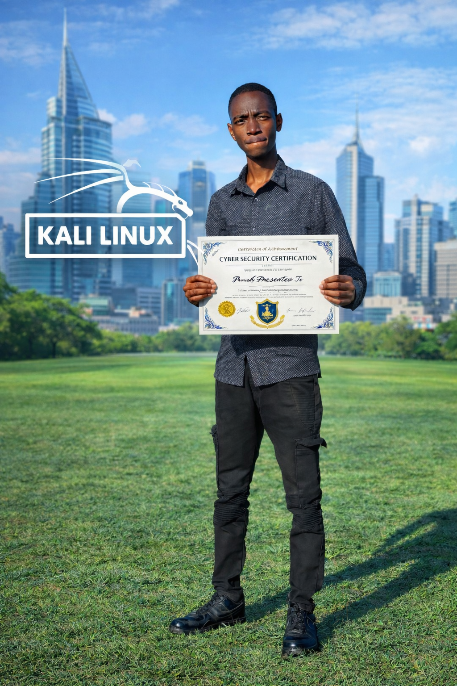

Computer skills
Microsoft Word, Excel, PowerPoint, email management, data entry, typing, document preparation, and file management.
Hello, I'm Abraham Mukiti Ndili — a motivated cybersecurity certificate holder with a passion for technology, digital safety, and continuous learning.

I enjoy learning how technology works and how to make digital environments safer.
A motivated and hardworking individual with a Certificate in Cyber Security and strong computer skills. I'm eager to apply my knowledge, gain practical experience, and contribute positively to an organization.
Stay curious, practice responsibly, keep improving, and communicate clearly. I value teamwork, integrity, and learning through hands-on experience.
A foundation in everyday computing and cybersecurity awareness, with a commitment to keep developing.
Microsoft Word, Excel, PowerPoint, email management, data entry, typing, document preparation, and file management.
Windows and Linux operating systems, basic computer troubleshooting, hardware setup, and maintenance.
Cybersecurity awareness and network fundamentals, with a strong interest in building practical security skills.
Internet research, video conferencing, social media management, and clear digital communication.
The learning journey that shaped my interest in technology.
Jodan College of Technology
Matung'u Boys High School
Have an opportunity, project, or professional connection in mind? I'd be glad to hear from you.